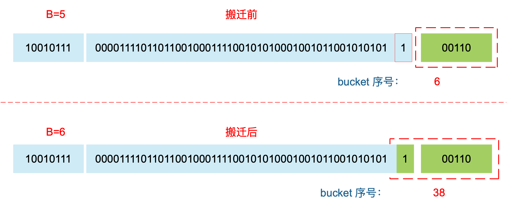
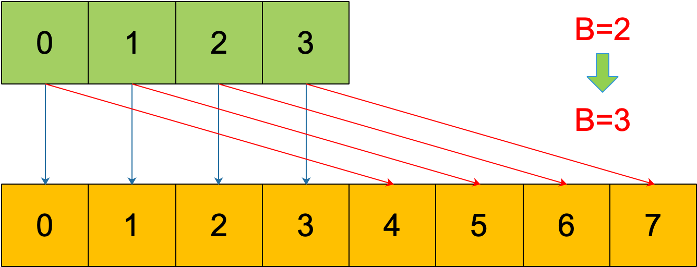
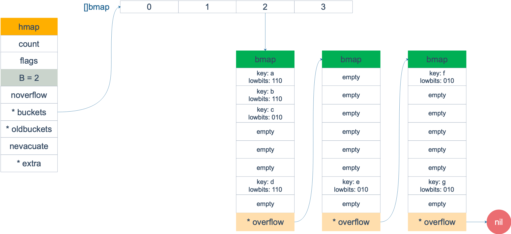
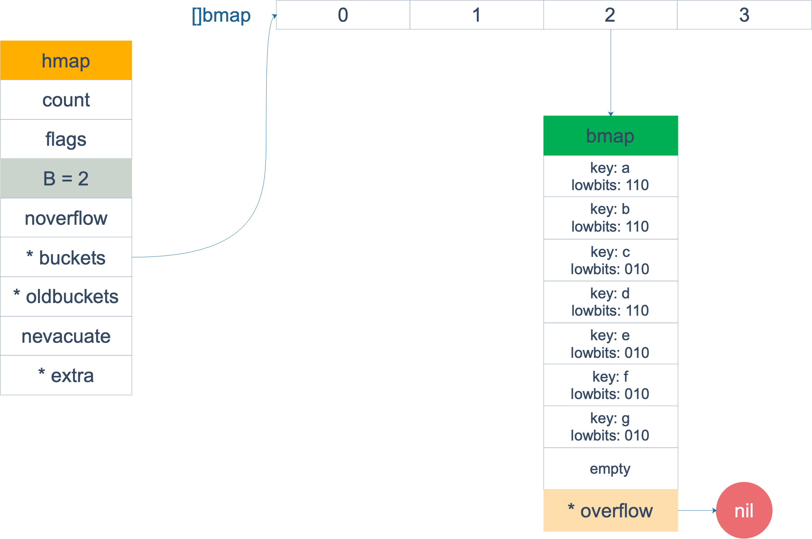
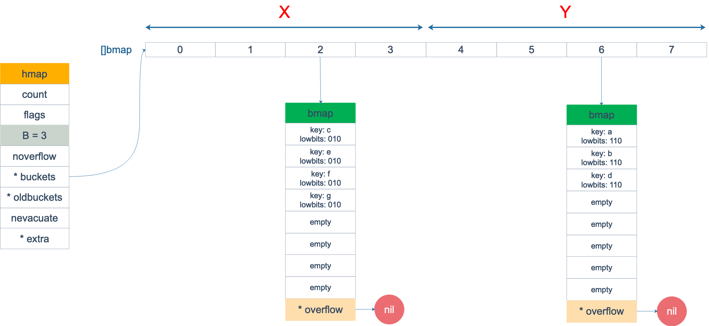

使用哈希表的目的就是要快速查找到目标 key，然而，随着向 map 中添加的 key 越来越多，key 发生碰撞的概率也越来越大。bucket 中的 8 个 cell 会被逐渐塞满，查找、插入、删除 key 的效率也会越来越低。最理想的情况是一个 bucket 只装一个 key，这样，就能达到 O(1) 的效率，但这样空间消耗太大，用空间换时间的代价太高。
Go 语言采用一个 bucket 里装载 8 个 key，定位到某个 bucket 后，还需要再定位到具体的 key，这实际上又用了时间换空间。
当然，这样做，要有一个度，不然所有的 key 都落在了同一个 bucket 里，直接退化成了链表，各种操作的效率直接降为 O(n)，是不行的。
因此，需要有一个指标来衡量前面描述的情况，这就是装载因子。Go 源码里这样定义 装载因子：
1
|
loadFactor := count / (2^B)
|
count 就是 map 的元素个数，2^B 表示 bucket 数量。
再来说触发 map 扩容的时机：在向 map 插入新 key 的时候，会进行条件检测，符合下面这 2 个条件，就会触发扩容：
- 装载因子超过阈值，源码里定义的阈值是 6.5。
- overflow 的 bucket 数量过多：当 B 小于 15，也就是 bucket 总数 2^B 小于 2^15 时，如果 overflow 的 bucket 数量超过 2^B；当 B >= 15，也就是 bucket 总数 2^B 大于等于 2^15，如果 overflow 的 bucket 数量超过 2^15。
通过汇编语言可以找到赋值操作对应源码中的函数是 mapassign，对应扩容条件的源码如下：
1
2
3
4
5
6
7
8
9
10
11
12
13
14
15
16
17
18
19
|
// src/runtime/hashmap.go/mapassign
// 触发扩容时机
if !h.growing() && (overLoadFactor(int64(h.count), h.B) || tooManyOverflowBuckets(h.noverflow, h.B)) {
hashGrow(t, h)
}
// 装载因子超过 6.5
func overLoadFactor(count int64, B uint8) bool {
return count >= bucketCnt && float32(count) >= loadFactor*float32((uint64(1)<<B))
}
// overflow buckets 太多
func tooManyOverflowBuckets(noverflow uint16, B uint8) bool {
if B < 16 {
return noverflow >= uint16(1)<<B
}
return noverflow >= 1<<15
}
|
解释一下：
第 1 点：我们知道，每个 bucket 有 8 个空位，在没有溢出，且所有的桶都装满了的情况下，装载因子算出来的结果是 8。因此当装载因子超过 6.5 时，表明很多 bucket 都快要装满了，查找效率和插入效率都变低了。在这个时候进行扩容是有必要的。
第 2 点：是对第 1 点的补充。就是说在装载因子比较小的情况下，这时候 map 的查找和插入效率也很低，而第 1 点识别不出来这种情况。表面现象就是计算装载因子的分子比较小，即 map 里元素总数少，但是 bucket 数量多（真实分配的 bucket 数量多，包括大量的 overflow bucket）。
不难想像造成这种情况的原因：不停地插入、删除元素。先插入很多元素，导致创建了很多 bucket，但是装载因子达不到第 1 点的临界值，未触发扩容来缓解这种情况。之后，删除元素降低元素总数量，再插入很多元素，导致创建很多的 overflow bucket，但就是不会触犯第 1 点的规定，你能拿我怎么办？overflow bucket 数量太多，导致 key 会很分散，查找插入效率低得吓人，因此出台第 2 点规定。这就像是一座空城，房子很多，但是住户很少，都分散了，找起人来很困难。
对于命中条件 1，2 的限制，都会发生扩容。但是扩容的策略并不相同，毕竟两种条件应对的场景不同。
对于条件 1，元素太多，而 bucket 数量太少，很简单：将 B 加 1，bucket 最大数量（2^B）直接变成原来 bucket 数量的 2 倍。于是，就有新老 bucket 了。注意，这时候元素都在老 bucket 里，还没迁移到新的 bucket 来。而且，新 bucket 只是最大数量变为原来最大数量（2^B）的 2 倍（2^B * 2）。
对于条件 2，其实元素没那么多，但是 overflow bucket 数特别多，说明很多 bucket 都没装满。解决办法就是开辟一个新 bucket 空间，将老 bucket 中的元素移动到新 bucket，使得同一个 bucket 中的 key 排列地更紧密。这样，原来，在 overflow bucket 中的 key 可以移动到 bucket 中来。结果是节省空间，提高 bucket 利用率，map 的查找和插入效率自然就会提升。
对于条件 2 的解决方案，曹大的博客里还提出了一个极端的情况：如果插入 map 的 key 哈希都一样，就会落到同一个 bucket 里，超过 8 个就会产生 overflow bucket，结果也会造成 overflow bucket 数过多。移动元素其实解决不了问题，因为这时整个哈希表已经退化成了一个链表，操作效率变成了 O(n)。
再来看一下扩容具体是怎么做的。由于 map 扩容需要将原有的 key/value 重新搬迁到新的内存地址，如果有大量的 key/value 需要搬迁，会非常影响性能。因此 Go map 的扩容采取了一种称为“渐进式”地方式，原有的 key 并不会一次性搬迁完毕，每次最多只会搬迁 2 个 bucket。
上面说的 hashGrow() 函数实际上并没有真正地“搬迁”，它只是分配好了新的 buckets，并将老的 buckets 挂到了 oldbuckets 字段上。真正搬迁 buckets 的动作在 growWork() 函数中，而调用 growWork() 函数的动作是在 mapassign 和 mapdelete 函数中。也就是插入或修改、删除 key 的时候，都会尝试进行搬迁 buckets 的工作。先检查 oldbuckets 是否搬迁完毕，具体来说就是检查 oldbuckets 是否为 nil。
我们先看 hashGrow() 函数所做的工作，再来看具体的搬迁 buckets 是如何进行的。
1
2
3
4
5
6
7
8
9
10
11
12
13
14
15
16
17
18
19
20
21
22
23
24
25
26
27
28
29
30
31
|
func hashGrow(t *maptype, h *hmap) {
// B+1 相当于是原来 2 倍的空间
bigger := uint8(1)
// 对应条件 2
if !overLoadFactor(int64(h.count), h.B) {
// 进行等量的内存扩容，所以 B 不变
bigger = 0
h.flags |= sameSizeGrow
}
// 将老 buckets 挂到 buckets 上
oldbuckets := h.buckets
// 申请新的 buckets 空间
newbuckets, nextOverflow := makeBucketArray(t, h.B+bigger)
flags := h.flags &^ (iterator | oldIterator)
if h.flags&iterator != 0 {
flags |= oldIterator
}
// 提交 grow 的动作
h.B += bigger
h.flags = flags
h.oldbuckets = oldbuckets
h.buckets = newbuckets
// 搬迁进度为 0
h.nevacuate = 0
// overflow buckets 数为 0
h.noverflow = 0
// ……
}
|
主要是申请到了新的 buckets 空间，把相关的标志位都进行了处理：例如标志 nevacuate 被置为 0， 表示当前搬迁进度为 0。
值得一说的是对 h.flags 的处理：
1
2
3
4
|
flags := h.flags &^ (iterator | oldIterator)
if h.flags&iterator != 0 {
flags |= oldIterator
}
|
这里得先说下运算符：&^。这叫按位置 0运算符。例如：
1
2
3
|
x = 01010011
y = 01010100
z = x &^ y = 00000011
|
如果 y bit 位为 1，那么结果 z 对应 bit 位就为 0，否则 z 对应 bit 位就和 x 对应 bit 位的值相同。
所以上面那段对 flags 一顿操作的代码的意思是：先把 h.flags 中 iterator 和 oldIterator 对应位清 0，然后如果发现 iterator 位为 1，那就把它转接到 oldIterator 位，使得 oldIterator 标志位变成 1。潜台词就是：buckets 现在挂到了 oldBuckets 名下了，对应的标志位也转接过去吧。
几个标志位如下：
1
2
3
4
5
6
7
8
|
// 可能有迭代器使用 buckets
iterator = 1
// 可能有迭代器使用 oldbuckets
oldIterator = 2
// 有协程正在向 map 中写入 key
hashWriting = 4
// 等量扩容（对应条件 2）
sameSizeGrow = 8
|
再来看看真正执行搬迁工作的 growWork() 函数。
1
2
3
4
5
6
7
8
9
|
func growWork(t *maptype, h *hmap, bucket uintptr) {
// 确认搬迁老的 bucket 对应正在使用的 bucket
evacuate(t, h, bucket&h.oldbucketmask())
// 再搬迁一个 bucket，以加快搬迁进程
if h.growing() {
evacuate(t, h, h.nevacuate)
}
}
|
h.growing() 函数非常简单：
1
2
3
|
func (h *hmap) growing() bool {
return h.oldbuckets != nil
}
|
如果 oldbuckets 不为空，说明还没有搬迁完毕，还得继续搬。
bucket&h.oldbucketmask() 这行代码，如源码注释里说的，是为了确认搬迁的 bucket 是我们正在使用的 bucket。oldbucketmask() 函数返回扩容前的 map 的 bucketmask。
所谓的 bucketmask，作用就是将 key 计算出来的哈希值与 bucketmask 相与，得到的结果就是 key 应该落入的桶。比如 B = 5，那么 bucketmask 的低 5 位是 11111，其余位是 0，hash 值与其相与的意思是，只有 hash 值的低 5 位决策 key 到底落入哪个 bucket。
接下来，我们集中所有的精力在搬迁的关键函数 evacuate。源码贴在下面，不要紧张，我会加上大面积的注释，通过注释绝对是能看懂的。之后，我会再对搬迁过程作详细说明。
源码如下：
1
2
3
4
5
6
7
8
9
10
11
12
13
14
15
16
17
18
19
20
21
22
23
24
25
26
27
28
29
30
31
32
33
34
35
36
37
38
39
40
41
42
43
44
45
46
47
48
49
50
51
52
53
54
55
56
57
58
59
60
61
62
63
64
65
66
67
68
69
70
71
72
73
74
75
76
77
78
79
80
81
82
83
84
85
86
87
88
89
90
91
92
93
94
95
96
97
98
99
100
101
102
103
104
105
106
107
108
109
110
111
112
113
114
115
116
117
118
119
120
121
122
123
124
125
126
127
128
129
130
131
132
133
134
135
136
137
138
139
140
141
142
143
144
145
146
147
148
149
150
151
152
153
154
155
156
157
158
159
160
161
162
163
164
165
166
167
168
169
170
171
172
173
174
175
176
177
178
179
180
181
182
183
184
185
186
187
|
func evacuate(t *maptype, h *hmap, oldbucket uintptr) {
// 定位老的 bucket 地址
b := (*bmap)(add(h.oldbuckets, oldbucket*uintptr(t.bucketsize)))
// 结果是 2^B，如 B = 5，结果为32
newbit := h.noldbuckets()
// key 的哈希函数
alg := t.key.alg
// 如果 b 没有被搬迁过
if !evacuated(b) {
var (
// 表示bucket 移动的目标地址
x, y *bmap
// 指向 x,y 中的 key/val
xi, yi int
// 指向 x，y 中的 key
xk, yk unsafe.Pointer
// 指向 x，y 中的 value
xv, yv unsafe.Pointer
)
// 默认是等 size 扩容，前后 bucket 序号不变
// 使用 x 来进行搬迁
x = (*bmap)(add(h.buckets, oldbucket*uintptr(t.bucketsize)))
xi = 0
xk = add(unsafe.Pointer(x), dataOffset)
xv = add(xk, bucketCnt*uintptr(t.keysize))、
// 如果不是等 size 扩容，前后 bucket 序号有变
// 使用 y 来进行搬迁
if !h.sameSizeGrow() {
// y 代表的 bucket 序号增加了 2^B
y = (*bmap)(add(h.buckets, (oldbucket+newbit)*uintptr(t.bucketsize)))
yi = 0
yk = add(unsafe.Pointer(y), dataOffset)
yv = add(yk, bucketCnt*uintptr(t.keysize))
}
// 遍历所有的 bucket，包括 overflow buckets
// b 是老的 bucket 地址
for ; b != nil; b = b.overflow(t) {
k := add(unsafe.Pointer(b), dataOffset)
v := add(k, bucketCnt*uintptr(t.keysize))
// 遍历 bucket 中的所有 cell
for i := 0; i < bucketCnt; i, k, v = i+1, add(k, uintptr(t.keysize)), add(v, uintptr(t.valuesize)) {
// 当前 cell 的 top hash 值
top := b.tophash[i]
// 如果 cell 为空，即没有 key
if top == empty {
// 那就标志它被"搬迁"过
b.tophash[i] = evacuatedEmpty
// 继续下个 cell
continue
}
// 正常不会出现这种情况
// 未被搬迁的 cell 只可能是 empty 或是
// 正常的 top hash（大于 minTopHash）
if top < minTopHash {
throw("bad map state")
}
k2 := k
// 如果 key 是指针，则解引用
if t.indirectkey {
k2 = *((*unsafe.Pointer)(k2))
}
// 默认使用 X，等量扩容
useX := true
// 如果不是等量扩容
if !h.sameSizeGrow() {
// 计算 hash 值，和 key 第一次写入时一样
hash := alg.hash(k2, uintptr(h.hash0))
// 如果有协程正在遍历 map
if h.flags&iterator != 0 {
// 如果出现 相同的 key 值，算出来的 hash 值不同
if !t.reflexivekey && !alg.equal(k2, k2) {
// 只有在 float 变量的 NaN() 情况下会出现
if top&1 != 0 {
// 第 B 位置 1
hash |= newbit
} else {
// 第 B 位置 0
hash &^= newbit
}
// 取高 8 位作为 top hash 值
top = uint8(hash >> (sys.PtrSize*8 - 8))
if top < minTopHash {
top += minTopHash
}
}
}
// 取决于新哈希值的 oldB+1 位是 0 还是 1
// 详细看后面的文章
useX = hash&newbit == 0
}
// 如果 key 搬到 X 部分
if useX {
// 标志老的 cell 的 top hash 值，表示搬移到 X 部分
b.tophash[i] = evacuatedX
// 如果 xi 等于 8，说明要溢出了
if xi == bucketCnt {
// 新建一个 bucket
newx := h.newoverflow(t, x)
x = newx
// xi 从 0 开始计数
xi = 0
// xk 表示 key 要移动到的位置
xk = add(unsafe.Pointer(x), dataOffset)
// xv 表示 value 要移动到的位置
xv = add(xk, bucketCnt*uintptr(t.keysize))
}
// 设置 top hash 值
x.tophash[xi] = top
// key 是指针
if t.indirectkey {
// 将原 key（是指针）复制到新位置
*(*unsafe.Pointer)(xk) = k2 // copy pointer
} else {
// 将原 key（是值）复制到新位置
typedmemmove(t.key, xk, k) // copy value
}
// value 是指针，操作同 key
if t.indirectvalue {
*(*unsafe.Pointer)(xv) = *(*unsafe.Pointer)(v)
} else {
typedmemmove(t.elem, xv, v)
}
// 定位到下一个 cell
xi++
xk = add(xk, uintptr(t.keysize))
xv = add(xv, uintptr(t.valuesize))
} else { // key 搬到 Y 部分，操作同 X 部分
// ……
// 省略了这部分，操作和 X 部分相同
}
}
}
// 如果没有协程在使用老的 buckets，就把老 buckets 清除掉，帮助gc
if h.flags&oldIterator == 0 {
b = (*bmap)(add(h.oldbuckets, oldbucket*uintptr(t.bucketsize)))
// 只清除bucket 的 key,value 部分，保留 top hash 部分，指示搬迁状态
if t.bucket.kind&kindNoPointers == 0 {
memclrHasPointers(add(unsafe.Pointer(b), dataOffset), uintptr(t.bucketsize)-dataOffset)
} else {
memclrNoHeapPointers(add(unsafe.Pointer(b), dataOffset), uintptr(t.bucketsize)-dataOffset)
}
}
}
// 更新搬迁进度
// 如果此次搬迁的 bucket 等于当前进度
if oldbucket == h.nevacuate {
// 进度加 1
h.nevacuate = oldbucket + 1
// Experiments suggest that 1024 is overkill by at least an order of magnitude.
// Put it in there as a safeguard anyway, to ensure O(1) behavior.
// 尝试往后看 1024 个 bucket
stop := h.nevacuate + 1024
if stop > newbit {
stop = newbit
}
// 寻找没有搬迁的 bucket
for h.nevacuate != stop && bucketEvacuated(t, h, h.nevacuate) {
h.nevacuate++
}
// 现在 h.nevacuate 之前的 bucket 都被搬迁完毕
// 所有的 buckets 搬迁完毕
if h.nevacuate == newbit {
// 清除老的 buckets
h.oldbuckets = nil
// 清除老的 overflow bucket
// 回忆一下：[0] 表示当前 overflow bucket
// [1] 表示 old overflow bucket
if h.extra != nil {
h.extra.overflow[1] = nil
}
// 清除正在扩容的标志位
h.flags &^= sameSizeGrow
}
}
}
|
evacuate 函数的代码注释非常清晰，对着代码和注释是很容易看懂整个的搬迁过程的，耐心点。
搬迁的目的就是将老的 buckets 搬迁到新的 buckets。而通过前面的说明我们知道，应对条件 1，新的 buckets 数量是之前的一倍，应对条件 2，新的 buckets 数量和之前相等。
对于条件 2，从老的 buckets 搬迁到新的 buckets，由于 bucktes 数量不变，因此可以按序号来搬，比如原来在 0 号 bucktes，到新的地方后，仍然放在 0 号 buckets。
对于条件 1，就没这么简单了。要重新计算 key 的哈希，才能决定它到底落在哪个 bucket。例如，原来 B = 5，计算出 key 的哈希后，只用看它的低 5 位，就能决定它落在哪个 bucket。扩容后，B 变成了 6，因此需要多看一位，它的低 6 位决定 key 落在哪个 bucket。这称为 rehash。

因此，某个 key 在搬迁前后 bucket 序号可能和原来相等，也可能是相比原来加上 2^B（原来的 B 值），取决于 hash 值 第 6 bit 位是 0 还是 1。
再明确一个问题：如果扩容后，B 增加了 1，意味着 buckets 总数是原来的 2 倍，原来 1 号的桶“裂变”到两个桶。
例如，原始 B = 2，1号 bucket 中有 2 个 key 的哈希值低 3 位分别为：010，110。由于原来 B = 2，所以低 2 位 10 决定它们落在 2 号桶，现在 B 变成 3，所以 010、110 分别落入 2、6 号桶。

理解了这个，后面讲 map 迭代的时候会用到。
再来讲搬迁函数中的几个关键点：
evacuate 函数每次只完成一个 bucket 的搬迁工作，因此要遍历完此 bucket 的所有的 cell，将有值的 cell copy 到新的地方。bucket 还会链接 overflow bucket，它们同样需要搬迁。因此会有 2 层循环，外层遍历 bucket 和 overflow bucket，内层遍历 bucket 的所有 cell。这样的循环在 map 的源码里到处都是，要理解透了。
源码里提到 X, Y part，其实就是我们说的如果是扩容到原来的 2 倍，桶的数量是原来的 2 倍，前一半桶被称为 X part，后一半桶被称为 Y part。一个 bucket 中的 key 可能会分裂落到 2 个桶，一个位于 X part，一个位于 Y part。所以在搬迁一个 cell 之前，需要知道这个 cell 中的 key 是落到哪个 Part。很简单，重新计算 cell 中 key 的 hash，并向前“多看”一位，决定落入哪个 Part，这个前面也说得很详细了。
有一个特殊情况是：有一种 key，每次对它计算 hash，得到的结果都不一样。这个 key 就是 math.NaN() 的结果，它的含义是 not a number，类型是 float64。当它作为 map 的 key，在搬迁的时候，会遇到一个问题：再次计算它的哈希值和它当初插入 map 时的计算出来的哈希值不一样！
你可能想到了，这样带来的一个后果是，这个 key 是永远不会被 Get 操作获取的！当我使用 m[math.NaN()] 语句的时候，是查不出来结果的。这个 key 只有在遍历整个 map 的时候，才有机会现身。所以，可以向一个 map 插入任意数量的 math.NaN() 作为 key。
当搬迁碰到 math.NaN() 的 key 时，只通过 tophash 的最低位决定分配到 X part 还是 Y part（如果扩容后是原来 buckets 数量的 2 倍）。如果 tophash 的最低位是 0 ，分配到 X part；如果是 1 ，则分配到 Y part。
这是通过 tophash 值与新算出来的哈希值进行运算得到的：
1
2
3
4
5
6
7
8
9
10
11
12
|
if top&1 != 0 {
// top hash 最低位为 1
// 新算出来的 hash 值的 B 位置 1
hash |= newbit
} else {
// 新算出来的 hash 值的 B 位置 0
hash &^= newbit
}
// hash 值的 B 位为 0，则搬迁到 x part
// 当 B = 5时，newbit = 32，二进制低 6 位为 10 0000
useX = hash&newbit == 0
|
其实这样的 key 我随便搬迁到哪个 bucket 都行，当然，还是要搬迁到上面裂变那张图中的两个 bucket 中去。但这样做是有好处的，在后面讲 map 迭代的时候会再详细解释，暂时知道是这样分配的就行。
确定了要搬迁到的目标 bucket 后，搬迁操作就比较好进行了。将源 key/value 值 copy 到目的地相应的位置。
设置 key 在原始 buckets 的 tophash 为 evacuatedX 或是 evacuatedY，表示已经搬迁到了新 map 的 x part 或是 y part。新 map 的 tophash 则正常取 key 哈希值的高 8 位。
下面通过图来宏观地看一下扩容前后的变化。
扩容前，B = 2，共有 4 个 buckets，lowbits 表示 hash 值的低位。假设我们不关注其他 buckets 情况，专注在 2 号 bucket。并且假设 overflow 太多，触发了等量扩容（对应于前面的条件 2）。

扩容完成后，overflow bucket 消失了，key 都集中到了一个 bucket，更为紧凑了，提高了查找的效率。

假设触发了 2 倍的扩容，那么扩容完成后，老 buckets 中的 key 分裂到了 2 个 新的 bucket。一个在 x part，一个在 y 的 part。依据是 hash 的 lowbits。新 map 中 0-3 称为 x part，4-7 称为 y part。

注意，上面的两张图忽略了其他 buckets 的搬迁情况，表示所有的 bucket 都搬迁完毕后的情形。实际上，我们知道，搬迁是一个“渐进”的过程，并不会一下子就全部搬迁完毕。所以在搬迁过程中，oldbuckets 指针还会指向原来老的 []bmap，并且已经搬迁完毕的 key 的 tophash 值会是一个状态值，表示 key 的搬迁去向。